Anime Scenes
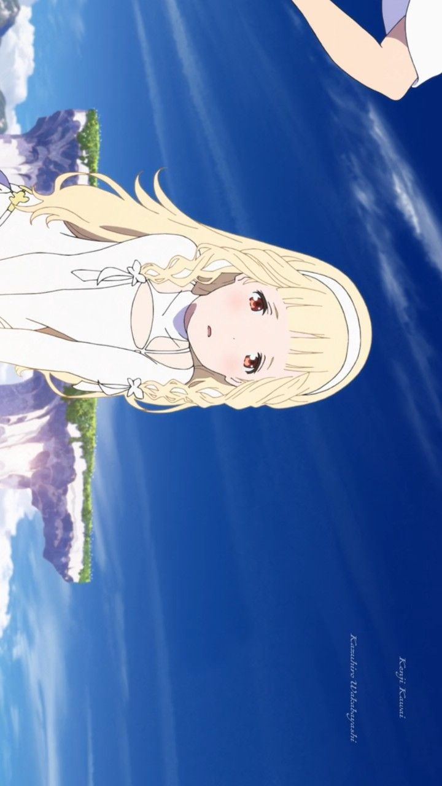
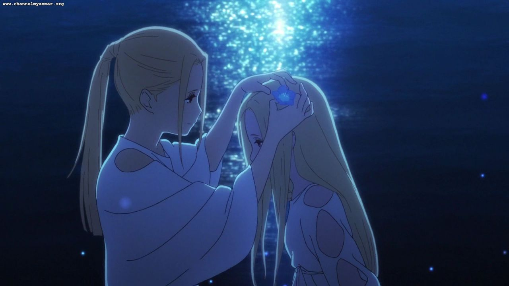
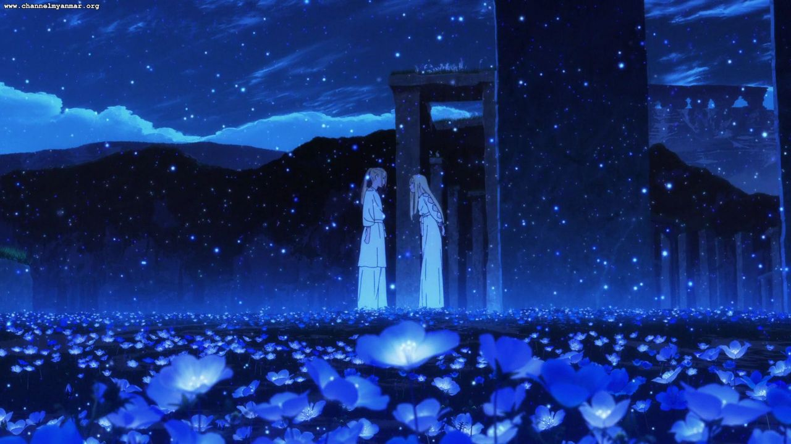
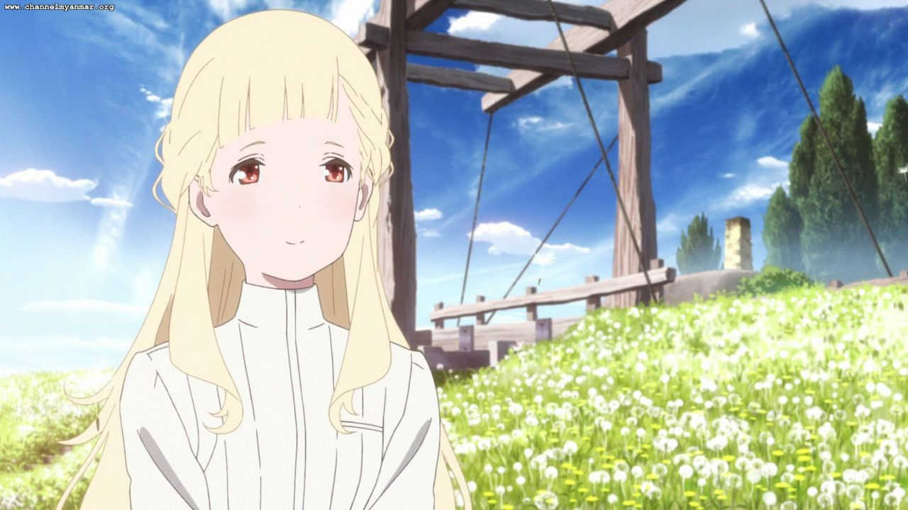
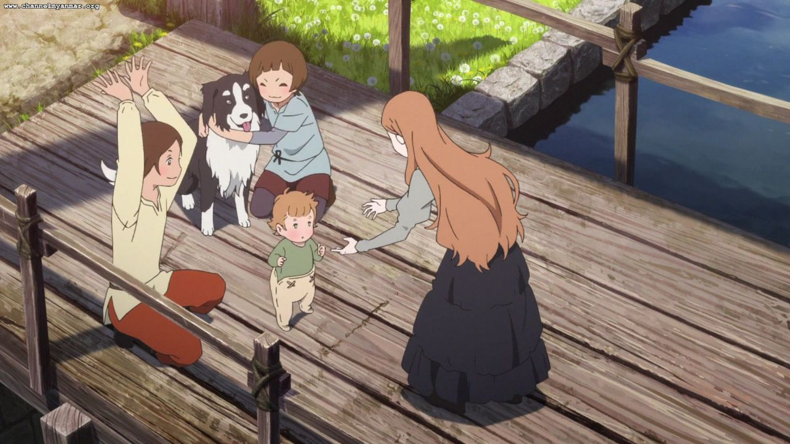
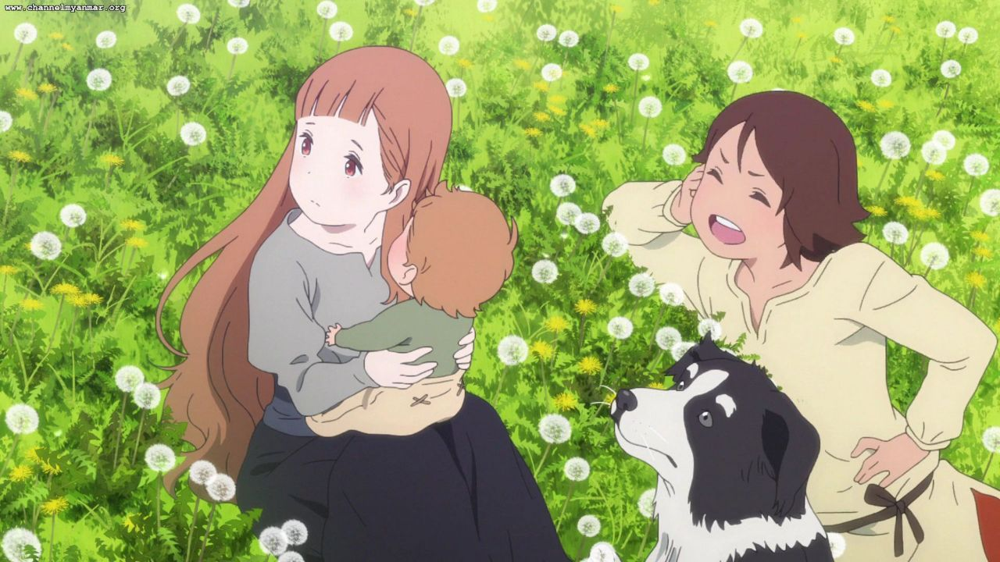
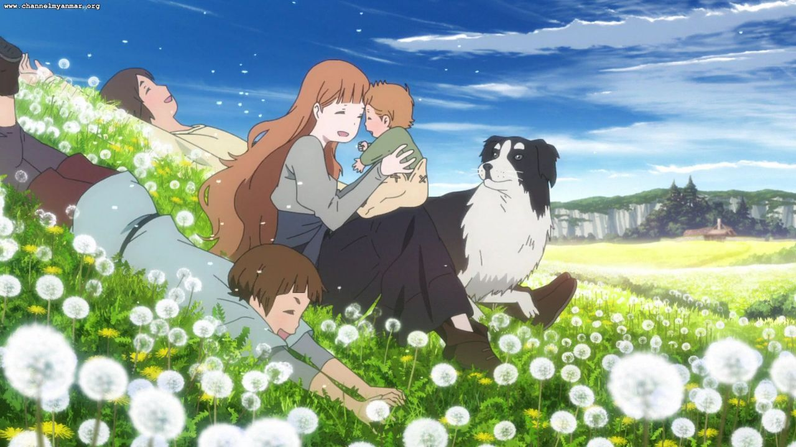
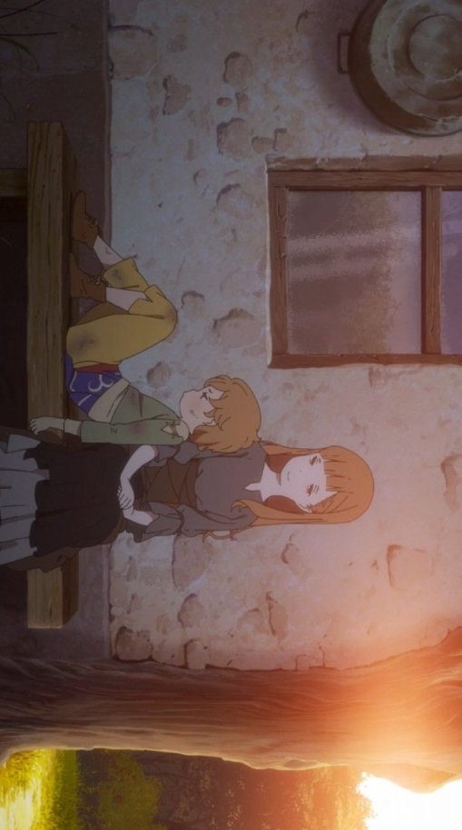
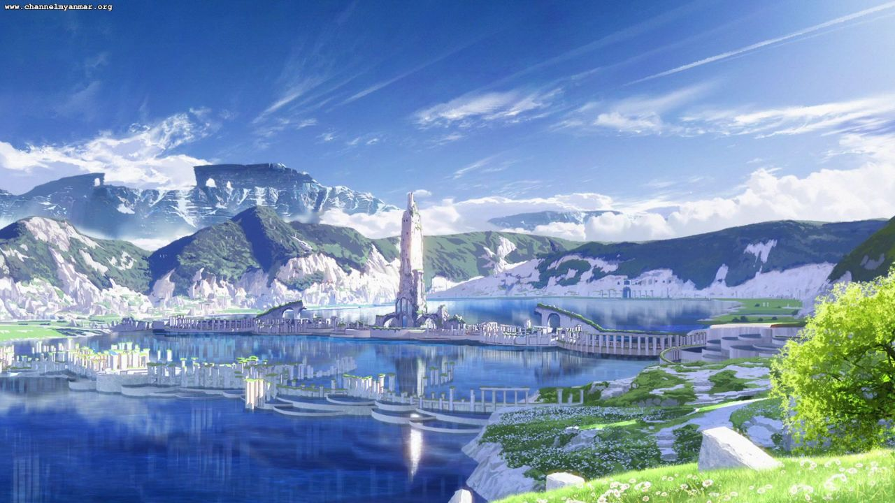
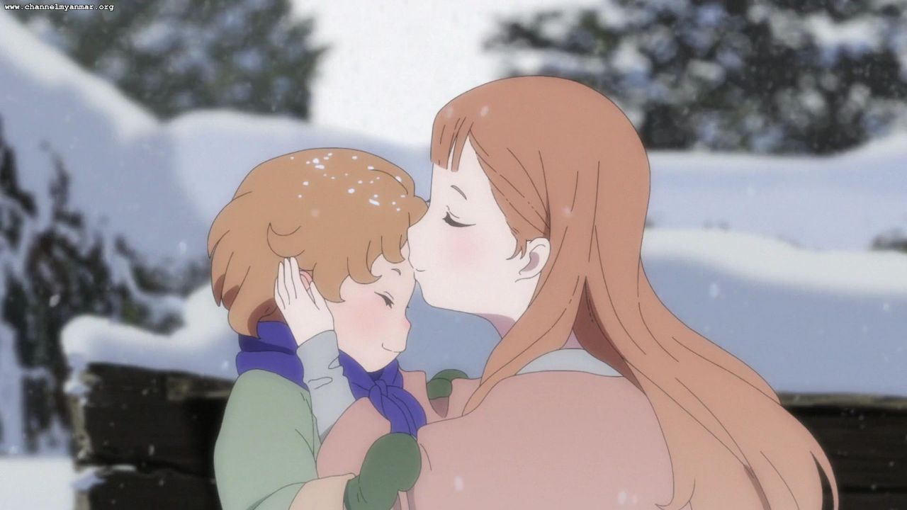
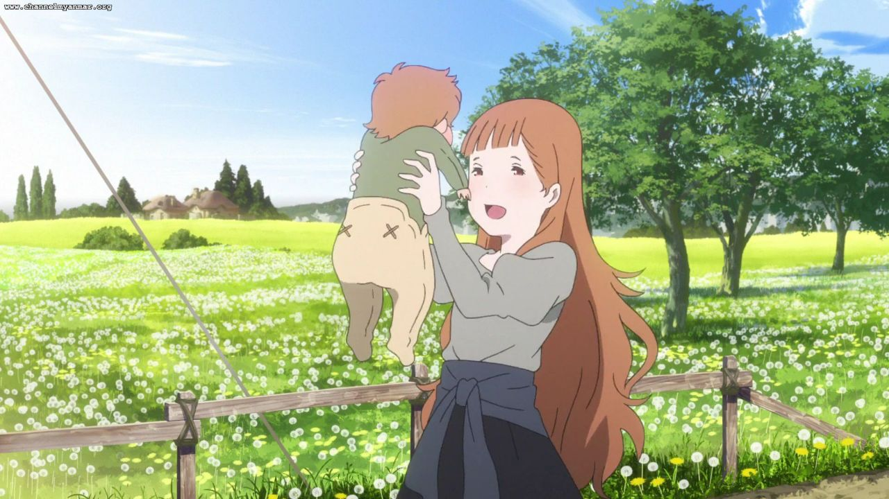
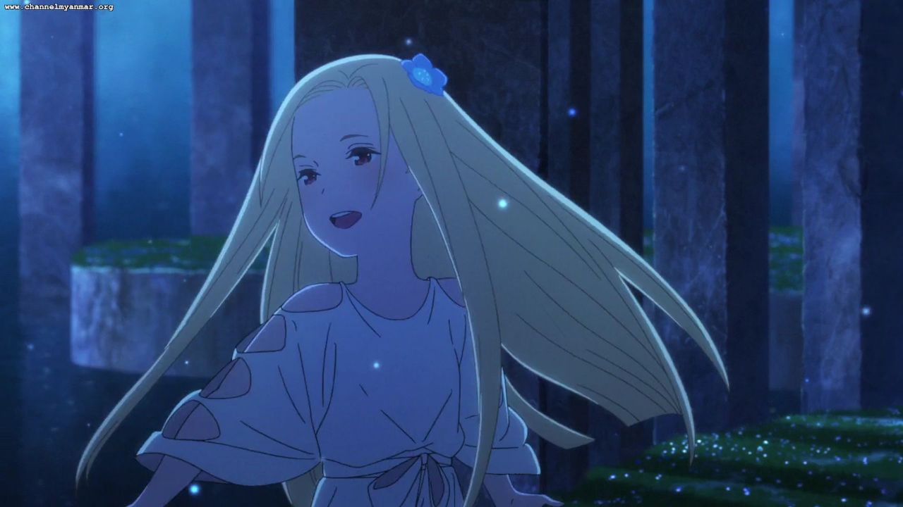
“To love someone is to be alone. But to be loved is to never be alone again.”
Anime Studio: P.A. Works
Director: Mari Okada
Producer: Kenji Horikawa
Distributor: Showgate
Rating: ★ 8.1 / 10
Source: Original Story
Release Date: Feb 24, 2018
Duration: 1h 55min
Music by: Kenji Kawai
Status: Movie
Country: Japan
Language: Japanese
Box Office: ~$4.3 million
Theme: Motherhood & Time